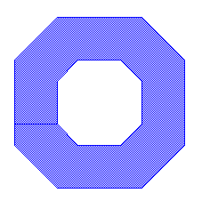
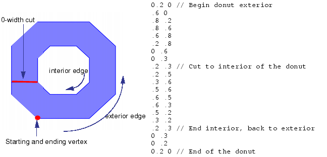

Fill shapes can
have as many vertices as needed. Shapes that are not rectangular
are complex.
Complex polygon fill shapes may not self-intersect.
Figure 1. Donut Shaped Fill Shape
Procedure
- Begin the fill shape with
the DFM Spec Fill [Shape] POLYFILL keyword.
- Specify each of the vertices
of the polygon.
Each coordinate pair defines
a single vertex of a closed polygon. The last vertex in the polygon
may or may not match the first one. If it does not, the polygon
is automatically closed. The last vertex is connected to the first
one.
Polygons with holes in
them can be defined by using 0-width cuts for which the edge-in
is the same as edge-out, but in the opposite direction.
When creating a polygon
with holes in it, vertices of the polygon exterior should be enumerated
in a counter-clockwise direction, whereas inside holes should be enumerated
in a clockwise direction. This prevents cut lines from intersecting.
Figure 2. How to Create the
Donut Shaped Fill 
- Specify the DFM Spec Fill
[Shape] STEP keyword set as needed.
- Specify the DFM Spec Fill
[Shape] OFFSET keyword set as needed.